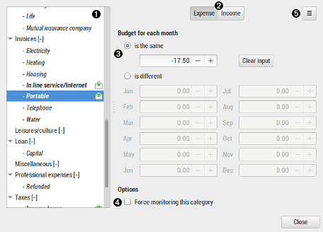

Using budget dialog

 Category list
Category list
display the list of categories and subcategories of the current wallet.
budgeted transaction are displayed bold and marked with a money-envelope icon:
 Expense/Income switcher
Expense/Income switcher
Toggle the category list with Expense/Income categories only
 Budget for each month
Budget for each month
| is the same | category budget will be the same for every month: Jan -> Dec you can then fill the amount below |
|---|---|
| Clear input | clear any budget for the selected category |
| is different | category budget will be specific each month you can then fill the amount of each needed months |
| Jan to Dec | The amount for each month |
 Options
Options
| Force monitoring this category | By default, if a transaction has no amount (0.00) it it not displayed into the budget report. This checkbox will change this and can manage such case. |
|---|
Menu button
| Import | import the budget from a csv file. See csv file format for details. |
|---|---|
| Export | export the budget to a csv file. See csv file format for details. |